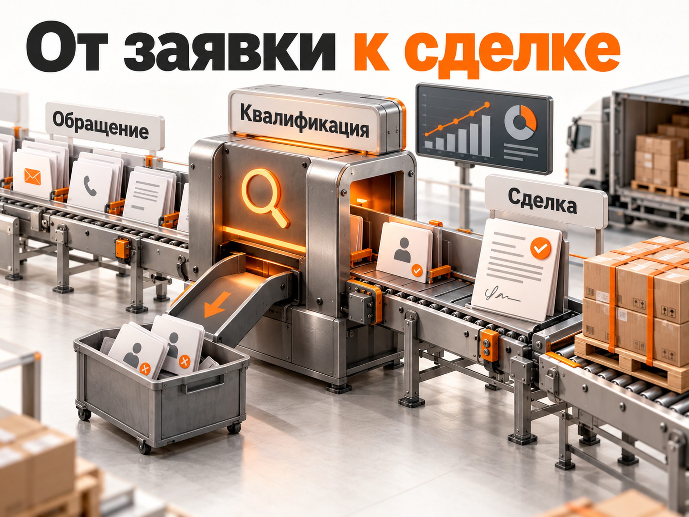

Блог о платном трафике
Реклама оптовой компании: как привлекать B2B-клиентов и заявки
Реклама оптовой компании должна привлекать покупателей, которым нужны товары партиями: магазины, дилеров, дистрибьюторов, производства и корпоративных закупщиков. Для этого необходимо разделить оптовый и розничный спрос, показать условия поставок в объявлениях и на сайте, а эффективность оценивать по квалифицированным заявкам и сделкам.
Основным платным каналом для поиска оптовых клиентов часто становится Яндекс Директ. Поиск позволяет работать с уже сформированным спросом, РСЯ помогает расширять охват, а товарные объявления показывают конкретный ассортимент. Дополнительно стоит развивать SEO, отраслевые каталоги и повторные продажи.
Главная сложность оптовой рекламы заключается в качестве обращений. Один и тот же товар ищут закупщик крупной сети и частный покупатель. Если их не разделять, можно получить много недорогих заявок, но почти не получить реальных оптовых заказов.
Как запустить рекламу оптовой компании: пошаговая инструкция
Для запуска рекламы оптового бизнеса в 2026 году сначала нужно определить целевого покупателя и допустимую стоимость привлечения, а затем выбирать рекламные инструменты.
Рабочая последовательность выглядит так:
- Определить целевых покупателей. Разделить магазины, дилеров, производства, корпоративных закупщиков и другие группы клиентов.
- Проверить поисковый спрос. Собрать запросы по товарам, поставщикам, производителям и оптовым поставкам.
- Подготовить предложение. Указать ассортимент, минимальные партии, географию, сроки и условия сотрудничества.
- Настроить аналитику. Отслеживать заявки, звонки, запросы прайса и квалификацию обращений.
- Запустить Яндекс Директ. Начать с наиболее понятного коммерческого спроса, при необходимости добавить РСЯ и товарные объявления.
- Оценить реальные результаты. Сопоставить рекламные расходы с количеством подходящих покупателей и заключённых сделок.
Не стоит начинать с масштабного охвата, если компания ещё не понимает, какие заявки ей выгодны. В B2B одна крупная регулярная закупка может быть ценнее десятков мелких обращений.
Кого должна привлекать реклама оптовой компании
Оптовая аудитория неоднородна. Для разных покупателей важны разные аргументы, поэтому объявления и посадочные страницы желательно строить с учётом сценария закупки.
| Покупатель | Что ищет | Что показать в рекламе |
|---|---|---|
| Розничный магазин | Товары для перепродажи | Ассортимент, наценку, минимальную закупку |
| Дилер или дистрибьютор | Постоянного поставщика | Дилерские условия, наличие, географию |
| Производственная компания | Сырьё или комплектующие | Характеристики, объёмы, сроки |
| Продавец маркетплейсов | Товар для дальнейшей продажи | Партии, документы, упаковку |
| Корпоративный закупщик | Надёжного контрагента | Документы, договор, поставку по графику |
Например, магазин ищет поставщика упаковки с подходящими закупочными ценами, а производству может требоваться та же упаковка, но в гораздо больших объёмах и с регулярными отгрузками.
Объединять такие запросы в одно предложение не всегда выгодно. Отличаются средние заказы, маржинальность, требования к поставщику и допустимая стоимость привлечения.
Главное отличие оптовой рекламы от розничной: её задача не просто найти человека, заинтересованного товаром, а привлечь покупателя, который соответствует условиям поставки и способен стать клиентом компании.
Поэтому фильтрация аудитории должна начинаться ещё до клика по объявлению, продолжаться на сайте и завершаться проверкой заявки отделом продаж.
Где рекламировать оптовую компанию
Для оптовой торговли обычно стоит рассматривать Поиск Яндекса, РСЯ, товарные объявления и SEO. Но эти инструменты решают разные задачи.
| Канал | Основная задача | Когда использовать |
|---|---|---|
| Поиск Яндекса | Получать обращения по готовому спросу | Покупатели уже ищут товар или поставщика |
| РСЯ | Расширять аудиторию и возвращать заинтересованных | Прямого поиска недостаточно |
| Товарные объявления | Продвигать конкретный ассортимент | Есть каталог с корректными данными |
| SEO | Привлекать покупателей из органического поиска | Есть ассортимент и возможность развивать сайт |
| Отраслевые каталоги | Находить закупщиков в специализированных каналах | Покупатели действительно используют такие площадки |
Поиск Яндекса
Поисковая реклама подходит для работы с запросами, в которых уже выражена потребность в закупке.
Например:
- упаковка для пищевых продуктов оптом;
- поставщик светодиодных светильников;
- купить специи оптом от производителя;
- детская одежда для магазинов оптом;
- поставки сырья для производства.
Такие запросы особенно интересны, потому что человек уже выбирает товар или поставщика.
Однако наличие слова «оптом» не гарантирует качественную заявку. Поэтому необходимо проверять поисковые фразы и учитывать реальные результаты отдела продаж.
Рекламная сеть Яндекса
РСЯ позволяет показывать рекламу людям, которые могут быть заинтересованы в продукции, даже если сейчас они не вводят конкретный поисковый запрос.
В оптовой торговле сети полезны для продвижения условий сотрудничества, новых товарных направлений и повторного контакта с посетителями сайта.
Например, потенциальный закупщик изучил несколько поставщиков упаковки, но ещё не отправил запрос. Реклама с предложением получить оптовый прайс может помочь ему вернуться к выбору.
В РСЯ можно тестировать тематические интересы, поведенческие сигналы, сегменты Метрики и ретаргетинг.
При этом интерес пользователя к товарной категории не означает, что он представляет бизнес. Поэтому качество заявок необходимо проверять отдельно.
Товарные объявления
Для компаний с большим ассортиментом подходят товарные объявления Яндекс Директа.
В Единой перфоманс-кампании можно создавать товарные объявления на основе сайта или товарного фида. Директ использует информацию о продукции для формирования рекламных предложений.
Однако в опте есть важная особенность: товарные карточки могут привлекать розничных покупателей.
Поэтому в каталоге желательно явно показывать оптовый формат, фасовку, минимальный заказ и условия получения цены. Нельзя выдавать розничную цену за оптовую или обещать закупку одной единицы, если компания так не работает.
SEO и другие каналы
SEO особенно полезно при широком ассортименте. Отдельные страницы под товарные категории, производителей, материалы и условия поставок позволяют получать покупателей из органической выдачи.
Также для отдельных ниш могут работать отраслевые площадки, профессиональные сообщества, партнёрские программы и прямые контакты с закупщиками.
Но запускать все каналы одновременно необязательно. Я бы сначала проверил, какие из них приводят квалифицированные обращения, а затем расширял продвижение.
Подробнее об особенностях платного продвижения сложных корпоративных продуктов я писал в статье «Яндекс Директ для B2B».
Как собрать поисковые запросы для оптовой рекламы
Семантику для оптовой компании лучше собирать по сценариям закупки, а не только по названиям товаров.
Для начала можно выделить четыре группы:
| Группа спроса | Пример запроса | Особенность |
|---|---|---|
| Товарный опт | кофе в зернах оптом | Покупатель определился с товаром |
| Поиск поставщика | поставщики упаковки | Сравнивает компании |
| Поиск производителя | производитель специй оптом | Может искать прямые поставки |
| Специальная потребность | упаковка для кондитерского производства | Важны характеристики и назначение |
Отдельно можно проверять запросы с указанием региона, фасовки, материала, марки товара и объёма поставки.
Как отсекать розничные запросы
Полностью исключить розницу только с помощью ключевых слов обычно невозможно.
Я использую несколько уровней фильтрации:
- Указываю оптовый формат непосредственно в объявлениях.
- Показываю минимальную партию или сумму заказа, если они установлены.
- Разделяю товарные направления и аудитории.
- Анализирую реальные поисковые запросы.
- Добавляю минус-фразы для явно нецелевого спроса.
- Сопоставляю обращения с данными CRM.
При этом не стоит автоматически исключать слова «цена», «купить» или названия отдельных товаров. Закупщики тоже могут использовать такие запросы.
Минус-фразы нужно выбирать по фактическому содержанию запроса. Например, информационные запросы о домашнем изготовлении продукции могут не подходить поставщику готовых товаров, но для оптового продавца ингредиентов некоторые из них потребуют дополнительной проверки.
Пример объявления для оптовой компании
Допустим, компания действительно поставляет упаковку партиями от 100 коробок.
Заголовок: Упаковка для магазинов оптом
Текст: Поставки от 100 коробок. Ассортимент для бизнеса. Запросите оптовый прайс и сроки отгрузки.
Это условный пример объявления, а не предложение конкретной компании. Его задача показать, как можно сразу обозначить требования к покупателю.
Такой текст способен отсечь часть розничного трафика ещё до перехода на сайт. При этом точные условия всегда должны соответствовать реальному предложению поставщика.
Какой сайт нужен для привлечения оптовых покупателей
Сайт оптовой компании должен быстро отвечать на четыре вопроса: что можно купить, в каком объёме, на каких условиях и как получить коммерческое предложение.
Человеку, который закупает товар для бизнеса, обычно недостаточно красивого каталога. Ему важно оценить надёжность поставщика и возможность сотрудничества.
На посадочной странице стоит разместить:
- ассортимент и основные категории продукции;
- минимальную партию или сумму заказа;
- условия и географию поставок;
- информацию о наличии;
- сроки отгрузки;
- документы и сертификаты, если они нужны покупателю;
- фотографии реального товара, склада или производства;
- условия оплаты и доставки;
- способы получения прайса;
- контакты отдела оптовых продаж.
Если стоимость зависит от объёма закупки, публиковать все цены необязательно. Можно предложить получение оптового прайса после указания категории товара и планируемого объёма.
При этом сам сайт должен отвечать на основные вопросы без обязательного общения с менеджером.
Нужен ли отдельный лендинг
Отдельная посадочная страница особенно полезна, когда у компании несколько направлений с разными условиями.
Например, фабрика может одновременно предлагать пошив на заказ и продажу готовой продукции со склада.
Это два разных сценария покупки. У них различаются требования к тиражу, сроки, аудитория и потенциальная стоимость заявки.
Если вести оба направления на одну общую страницу, покупателю сложнее найти подходящее предложение.
Но создавать лендинг для каждой категории тоже необязательно. Если существующий сайт хорошо раскрывает конкретный товар и условия закупки, его можно использовать для рекламы.
Критерий выбора простой: посадочная страница должна соответствовать запросу пользователя и объяснять условия сотрудничества без лишних переходов.
Как оценивать эффективность рекламы оптовой компании
Главный показатель эффективности рекламы оптовой компании - не количество всех обращений, а стоимость привлечения подходящего покупателя и результат последующих продаж.
Для анализа желательно учитывать несколько этапов.
Обращение
Это контакт потенциального покупателя: отправленная форма, разговор по телефону, входящее сообщение или запрос коммерческого предложения.
Важно учитывать именно состоявшиеся обращения.
Например, нажатие на кнопку WhatsApp или Telegram само по себе не подтверждает, что человек действительно написал сообщение.
Для звонков желательно использовать коллтрекинг. Для мессенджеров необходима интеграция, которая фиксирует входящее обращение, а не только переход по ссылке.
Квалифицированная заявка
Квалифицированная B2B-заявка - это обращение покупателя, соответствующего основным условиям компании по ассортименту, объёму закупки, географии и другим критериям.
Допустим, оптовый поставщик принимает заказы от 200 000 ₽. Из 30 обращений только 15 поступили от компаний с подходящим объёмом.
Тогда доля квалифицированных заявок составляет 50%.
Эта цифра не является нормативом рынка, а показывает принцип расчёта.
Коммерческое предложение и сделка
После квалификации клиент может получить прайс, запросить образцы, согласовать условия и оформить закупку.
Часть сделок происходит значительно позже первоначального обращения.
Поэтому важно сохранять историю контактов и фиксировать, какая рекламная кампания привела покупателя.
Какие показатели считать
| Показатель | Формула | Что показывает |
|---|---|---|
| CPL | Расход / все лиды | Стоимость обычного обращения |
| Доля квалификации | Целевые лиды / все лиды × 100% | Качество обращений |
| CPQL | Расход / целевые лиды | Стоимость подходящей заявки |
| Конверсия в продажу | Сделки / целевые лиды × 100% | Эффективность работы с заявками |
| CAC | Расход / новые клиенты | Стоимость привлечения покупателя |
Для оптовой компании CPQL часто информативнее обычного CPL.
Если одна кампания приносит заявки по 800 ₽, но почти все они розничные, а другая приводит подходящих закупщиков по 2000 ₽, нельзя считать первую автоматически более эффективной.
Окончательный вывод зависит от количества сделок и их экономики.
Зачем связывать Яндекс Директ с CRM
Связка с CRM позволяет учитывать результаты, которые невозможно определить только по поведению пользователя на сайте.
Например, менеджер после разговора устанавливает статус «оптовый клиент», «не подходит минимальная партия» или «заключён договор».
При корректной интеграции такие данные можно передавать в Яндекс Метрику и Директ как офлайн-конверсии.
Для сопоставления конверсии с рекламным посещением Яндекс использует идентификаторы, включая ClientID, телефон и электронную почту.
Это позволяет оценивать рекламные кампании с учётом последующих действий покупателя. Если объём данных достаточен, качественные конверсии могут использоваться и для оптимизации рекламных стратегий.

Подробнее о работе с такими данными я писал в статье «Офлайн-конверсии в Яндекс Директе».
Сколько стоит реклама оптовой компании: расчёт бюджета
Стоимость рекламы оптовой компании зависит от товарной категории, конкуренции, географии, стоимости клика, конверсии сайта и качества поступающих обращений.
Универсальной цены B2B-заявки не существует.
Вместо попытки найти средний CPL для всех оптовиков полезнее рассчитать допустимую стоимость привлечения клиента из собственной экономики бизнеса.
Пример расчёта
Рассмотрим условную оптовую компанию со следующими параметрами:
- рекламный бюджет: 120 000 ₽;
- средняя стоимость клика: 120 ₽;
- конверсия сайта в обращение: 3%;
- доля квалифицированных заявок: 50%;
- конверсия квалифицированных заявок в продажу: 20%.
Все значения взяты для демонстрации методики. Это не прогноз конкретной ниши и не средние показатели рынка за 2026 год.
Получается следующая расчётная воронка:
| Показатель | Расчёт | Результат |
|---|---|---|
| Переходы на сайт | 120 000 / 120 | 1000 |
| Все заявки | 1000 × 3% | 30 |
| Квалифицированные заявки | 30 × 50% | 15 |
| Новые покупатели | 15 × 20% | 3 |
| CPL | 120 000 / 30 | 4000 ₽ |
| CPQL | 120 000 / 15 | 8000 ₽ |
| CAC | 120 000 / 3 | 40 000 ₽ |
В этом сценарии одна обычная заявка стоит 4000 ₽, квалифицированная - 8000 ₽, а привлечение нового покупателя - 40 000 ₽.
Если маржинальный доход от первой закупки после прямых переменных расходов составляет 80 000 ₽, то реклама за 40 000 ₽ может быть экономически оправданной. Но при оценке необходимо учитывать также другие расходы на привлечение и обслуживание клиента.
Для компаний с регулярными поставками важно анализировать повторные закупки. Новый покупатель может приносить прибыль в течение нескольких месяцев или лет.
При этом нельзя автоматически считать будущие заказы гарантированными.
Как рассчитать допустимую стоимость заявки
Бюджет лучше планировать от предельной стоимости привлечения покупателя.
Формула:
Допустимый CPQL = допустимый CAC × конверсия квалифицированной заявки в продажу.
Например, если компания готова потратить на привлечение покупателя максимум 40 000 ₽, а 20% квалифицированных заявок превращаются в продажи, допустимый CPQL равен 8000 ₽.
Если лишь половина обычных обращений соответствует условиям компании, допустимый CPL составляет 4000 ₽.
Это помогает установить экономически обоснованную цель ещё до запуска рекламной кампании.
Какой бюджет нужен для тестирования
Бюджет теста зависит от допустимого CPL, планируемого количества обращений и доступного поискового спроса.
Для условного плана на 20 заявок при расчётном CPL 4000 ₽ потребуется 80 000 ₽ рекламных расходов.
Но 20 обращений не обязательно дадут достаточно информации о реальных продажах. Если цикл сделки долгий, окончательная оценка может занять больше одного месяца.
В узком B2B-сегменте не всегда возможно получить большой объём данных даже при увеличении бюджета. Поэтому перед запуском необходимо проверить частотность запросов, географию и реалистичность прогноза трафика.
Сам бюджет является расчётной моделью, а не гарантией получения указанного количества заявок.
Реальный кейс: оптовая продажа суперфуда
В одном из моих проектов продвигалась оптовая продажа суперфуда и продуктов здорового питания.
Покупателями были магазины, пекарни, производства и другие компании, закупающие продукцию партиями.
Задача заключалась в снижении стоимости заявки без увеличения рекламных расходов.
В проекте использовались Поиск, РСЯ и автоматизированные рекламные форматы. Отслеживались формы и другие типы обращений.
В результате оптимизации удалось снизить стоимость лида примерно с 1300 до 600 ₽. Количество обращений выросло примерно вдвое без увеличения бюджета.
В отчёте сравнивались два периода 2022 года:
| Показатель | Май - июнь 2022 | Июль - август 2022 |
|---|---|---|
| Рекламные расходы | 102 050 ₽ | 102 382 ₽ |
| Клики | 6640 | 11 270 |
| Средний CPC | 15,37 ₽ | 9,08 ₽ |
| Конверсия формы | 0,59% | 1,61% |
Эти результаты показывают, что перераспределение бюджета и работа с качеством трафика могут улучшить эффективность даже без увеличения расходов.
При этом показатели относятся к конкретному проекту 2022 года. Использовать стоимость лида 600 ₽ как актуальный ориентир для любой оптовой компании в 2026 году нельзя.
Подробности представлены в кейсе продвижения суперфуда через Яндекс Директ.
Реальный кейс: фабрика детской одежды
Другой пример - продвижение фабрики детской одежды в Кыргызстане.
У бизнеса было два направления:
- Пошив одежды на заказ оптовыми партиями.
- Продажа готовой продукции со склада.
Для каждого направления подготовили отдельную посадочную страницу.
В рекламе использовались Поиск, РСЯ и другие инструменты Яндекс Директа.
За период с 12 декабря 2024 года по 12 марта 2025 года рекламные расходы составили около 1032 долларов, а количество заявок достигло 173.
Эффективность каналов различалась:
- РСЯ и отдельные автоматизированные кампании давали обращения примерно по 4 доллара.
- Поиск по пошиву одежды приносил заявки примерно по 13 долларов.
- Поиск по продаже готовой продукции со склада оказался значительно дороже: около 45 долларов за обращение.
Основная практическая ценность этого примера заключается не в самой стоимости лида.
Результаты показывают, насколько сильно может отличаться экономика разных направлений даже внутри одной компании.
Поиск по готовой продукции оказался дорогим, но это не означает, что поисковая реклама всегда плохо подходит оптовикам. Для пошива на заказ поисковые запросы, наоборот, обеспечивали более сформированный спрос.
В проекте также тестировались похожие аудитории на основе клиентской базы. Они дали дешёвые обращения на начальном этапе, но устойчивого результата не обеспечили.
Поэтому при выборе рекламного канала важна не минимальная цена одной заявки, а стабильный поток подходящих покупателей.
Этот кейс относится к 2024‑2025 годам и не является исследованием среднерыночной стоимости B2B-лидов в 2026 году.
Подробнее: кейс фабрики детской одежды.
Почему реклама оптовой компании не приносит продажи
Даже при достаточном количестве обращений оптовая реклама может не окупаться.
Слишком много розничных покупателей
Если объявления не содержат условий оптовой закупки, часть трафика будет состоять из людей, которым требуется один товар или небольшая упаковка.
Решение: уточнить объявления, минимальные партии и поисковые запросы. После запуска проверять качество обращений.
Общая страница вместо конкретного предложения
Человек ищет определённую категорию, но попадает на главную страницу корпоративного сайта.
Ему приходится самостоятельно искать нужный ассортимент и условия закупки.
Решение: направлять рекламу на релевантную категорию каталога или специализированную посадочную страницу.
Оптимизация на слишком простые цели
Просмотры страниц и нажатия на кнопки могут накапливаться быстрее настоящих обращений.
Если оценивать кампанию только по таким событиям, возникает риск оптимизировать рекламу под активность пользователей, не связанную с реальными закупками.
Решение: отдельно отслеживать состоявшиеся обращения и по возможности передавать квалификацию из CRM.
Недостаточно данных для автоматической стратегии
В узкой B2B-нише конверсий может быть немного.
Если дополнительно раздробить бюджет на большое количество кампаний и малочисленных целей, статистики станет ещё меньше.
Решение: выбирать структуру и стратегию с учётом реального объёма целевых действий, не объединяя при этом экономически разные направления без необходимости.
Отдел продаж не обрабатывает обращения
Оптовый покупатель может отправить несколько запросов разным поставщикам. Если ему долго не отвечают, он способен выбрать конкурента независимо от качества рекламной кампании.
Решение: контролировать скорость первого ответа, полноту коммерческого предложения и последующие контакты.
Результат оценивают слишком рано
В оптовых продажах между первым обращением и заключением договора может пройти значительное время.
Поэтому отсутствие оплаченных заказов в первые дни ещё не доказывает, что реклама не работает.
Необходимо анализировать промежуточные статусы и учитывать реальный цикл сделки.
Когда оптовой компании стоит запускать рекламу
Запуск Яндекс Директа имеет смысл, когда компания готова принимать и обрабатывать новые запросы.
Перед стартом важно убедиться, что определены минимальные партии, понятны условия поставки, есть актуальный ассортимент и назначены сотрудники, отвечающие за обращения.
Кроме того, желательно заранее оценить маржу и допустимую стоимость привлечения покупателя.
Если компания не может назвать даже приблизительную прибыль с заказа, определить экономическую эффективность рекламы будет сложно.
В такой ситуации сначала стоит разобраться с экономикой продаж, а уже затем выбирать рекламный бюджет.
Как заказать рекламу оптовой компании
Я занимаюсь настройкой и ведением Яндекс Директа более 10 лет, в том числе для B2B-проектов, производственных предприятий и оптовой торговли.
При работе с оптовым бизнесом начинаю с анализа ассортимента, поискового спроса и требований к покупателям. Затем проверяю посадочные страницы, настраиваю рекламные кампании и аналитику.
Основная задача - получать не просто больше обращений, а заявки, которые соответствуют условиям компании и могут превращаться в реальные закупки.
Стоимость ведения рекламы зависит от масштаба проекта и состава работ. Мои услуги начинаются от 30 000 ₽ в месяц, рекламный бюджет оплачивается отдельно.
Посмотреть другие примеры можно в разделе кейсов по Яндекс Директу.
Для обсуждения рекламы оптовой компании можно связаться со мной через сайт.